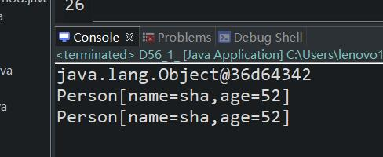
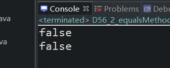

原文连接:https://www.cnblogs.com/ruigege0000/p/11968493.html
一、关于object中的toString方法：
1.SUN公司在Object类中设计toString方法的目的：返回java对象的字符串的表示形式。
2.在现实的开发过程中，Object里面的toString方法已经不够用了，因为Object的toString方法实现的结果不满意。Object中的toString方法实现的结果不满意。Object中的呢toString方法要被重写了。
3.println打印的如果是对象的话，那么就会默认打印对象的toString方法得到的结果。
4.SUN公司的默认toString方法是这样的
public String toString(){
return getClass().getname() + "@" + Interger.toHexString(hashCode());
}
object中的toString方法返回：类名@java对象的内存地址经过哈希算法得到的int类型值在转换为十六进制。这个输出可以等同看作java对象在堆中内存地址。
5.举个例子
package com.bjpowernode.java_learning;
public class D56_1_ {
public static void main(String[] args) {
Object o1 = new Object();
String s1 = o1.toString();
System.out.println(s1);
Person56 p1 = new Person56("sha",52);
System.out.println(p1);//我们可以看出来，这里打印出来的不是对象，而是打印的对象的toString方法的结果，所以和第11行结果相同
String s2 = p1.toString();
System.out.println(s2);
}
}
class Person56 {
String name;
int age;
Person56(String name ,int age){
this.name = name ;
this.age = age;
}
//重写这个方法，就要按照项目的实际需求进行重新编写
public String toString() {
return "Person[name=" + name + ",age=" + age +"]";
}
}

二、关于Object中的equals方法
1.Object中的equals方法：
public boolean equals(o2){
return (this == obj);//等号两边是引用类型，则比较内存地址，地址相同则返回true.反之，则返回false
}
//Object中的equals方法比较的是两个引用的内存地址。java对象中的equals方法的设计目的在于：判断两个对象是否一样。
2.举个例子
package com.bjpowernode.java_learning;
public class D56_2_equalsMethodAnalysis {
public static void main(String[] args) {
Object o1 = new Object();
Object o2 = new Object();
boolean b1 = o1.equals(o2);
System.out.println(b1);
Star56 s1 = new Star56(100,"xiaoming");
Star56 s2 = new Star56(100,"xiaoming");
System.out.println(s1.equals(s2));
//这样比较出来的是false,因为比较的是两个对象的内存地址，但是这样显然是不符合我们的预期
//其实我们想要比较的是两个对象里面的内容是不是一致的。于是我们重写
}
}
class Star56{
int id;
String name;
public Star56(int id,String name) {
this.id = id;
this.name = name;
}
}

三、源码：
D56_1_toStringMethodAnalysis,java
D56_2_equalsMethodAnalysis.java
地址：
https://github.com/ruigege66/Java/blob/master/D56_1_toStringMethodAnalysis,java
https://github.com/ruigege66/Java/blob/master/D56_2_equalsMethodAnalysis.java
2.CSDN：https://blog.csdn.net/weixin_44630050（心悦君兮君不知-睿）
3.博客园：https://www.cnblogs.com/ruigege0000/
4.欢迎关注微信公众号：傅里叶变换，个人公众号，仅用于学习交流，后台回复”礼包“，获取大数据学习资料